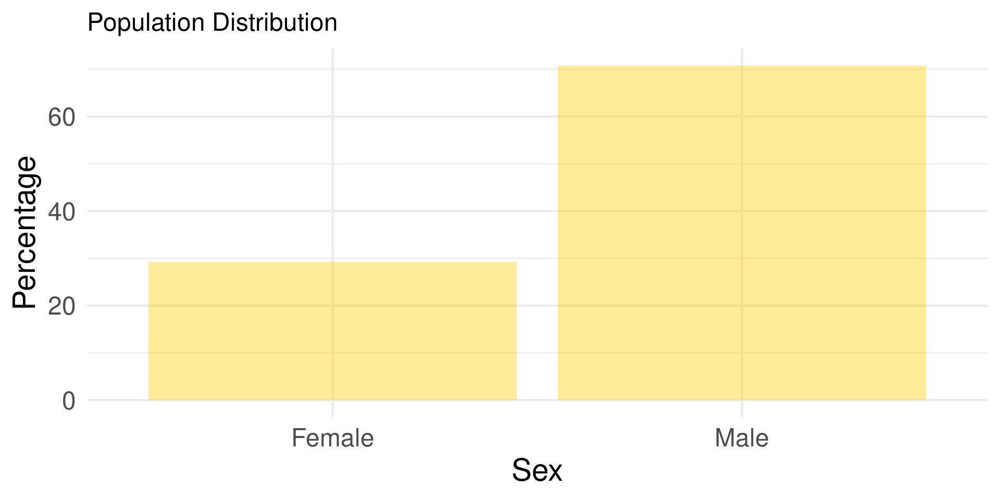
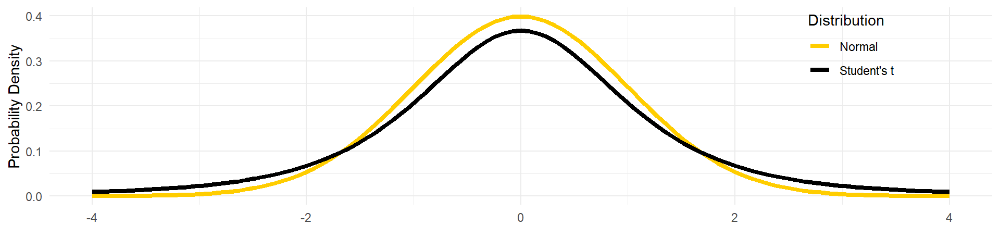

Confidence Intervals and Distribution Comparison
Large N & Leeuwenhoek (70700173)
1.1 Random Variable
- A random variable is a mathematical function that assigns numerical values to each possible outcome from a random experiment or process in the population.
Technically, a random (stochastic) variable is a type of variable in statistics whose possible values depend on the outcomes of a certain random phenomenon.
Different “variables” 
- Variable in algebra: \(Y = log((\sqrt{X})^{\frac{1}{e}}) - 15.\)
- Variable in data analysis: “I asked about the respondents’ gender, age, and education.”
- Distribution for a random variable: The description of how likely a random variable takes one of its possible states.
1.7 Large random sample properties
- Convergence: \(p\lim_{n \to \infty}X_n = a, a\in R.\)

- Consistency:
\(p\lim_{n \to \infty}\hat{\theta}_n = \theta.\)

2.1 Learning the population from a sample

X: a random sample from a probability distribution with parameter θ.
Confidence interval (CI) for the parameter θ, with confidence level γ: An interval determined by random variables u(X) and v(X) with the property: \(Pr\{u(X)<\theta <v(X)\}\ =\ \gamma = 1 - \alpha, \quad \forall\theta.\)
Human language: In a repeatedly sampling, the percentage of the samples that could contain θ
2.2 Calculated CI (Two-tailed)1
- \(\bar X \pm Z_{\alpha/2}SE\)
- α: 1 - Confident level;
- Z-score: \(Z = \frac{X - \mu}{\sigma}\) Learned
- Proportion: \(\pi = P \pm Z_{\alpha/2}\sqrt{\frac{P(1 - P)}{n}}\)
Interpretation
In 100 times sampling of …, there are … samples (… of the chance) that the CI could contain the true value.
How can you get smaller CI?

2.3 When N is not that large

Solution: A fatter-tailed distribution

2.4 T/Student’s distribution 


3.1 What can CI do
- Does an event just happen by chance?
- Is Sample A different from Sample B?
🌰 Your friend, who is the accountant for “Dr. Hu’s Amazing Team,” was asked by the organizer to help set a budget for a thank-you lunch after the team’s successful conference organization. The organizer, though unwilling to spend much, didn’t want to seem too stingy either. After calculating the average cost of lunch for a random sample of nine team members, your friend found it to be ¥29, with a ¥3 deviation, and proposed a budget of ¥31 per person. The organizer, however, criticized her, claiming “¥26 is enough” and accusing her of not understanding statistics. Is the organizer PUA your friend?

3.2 PUA or not
N =9, (X̄ 29, s 3) vs. 26
PUA = Blaming someone for something they did nothing wrong.
The organizer blamed your friend for a unreasonable budget ⇒ “Unreasonable” means a guess out of the 95% CI of the sample
- Set α = 0.05;
- N = 9, t distribution, d.f. = 9 - 1 = 8;
- t(α < (1 - 0.05)/2) = 2.306 (
qt(.975, df = 8)). - \(CI = 29 \pm t_{\frac{0.975}{2}}(\frac{3}{\sqrt{9}})\), i.e, [27, 31].

What’s the interpretation?
3.4 🌰

The “Learning R with Dr. Hu and His Friends” workshop includes two series: “R Survivor” (basic) and “R Expert” (advanced). The five “R Survivor” workshops received 932, 586, 796, 501, and 351 downloads, while the “R Expert” workshops had 771, 917, 326, 825, and 399 downloads.
Which series is more popular?
3.6 When Not IID
IID

Matched

3.8 An example

Four students must achieve HSK-4 to apply to Chinese universities (fantasy). For higher-tier universities, they need even higher scores (fictional). After reviewing their initial exam results, they underwent preparatory training. The tables below show their performance in two subsequent exams.
Was the preparatory training helpful?
| Student | Tim | Frank | Emily | Elise |
|---|---|---|---|---|
| Before | 57 | 57 | 73 | 65 |
| After | 64 | 66 | 89 | 71 |
3.10 Another 🌰
Gallop drew a pair of 1500 samples from the American population. In the sample of 1980, there are 52% Democrats, and 46% in the 1985 sample. Were the Democrats the same for two years, given the 95% CI?
Solution: Let α = 0.05,
\[\begin{align} \Pi_1 - \Pi_2 &= (0.46 - 0.52) \pm 1.96\sqrt{\frac{0.46 * 0.54}{1500} + \frac{0.52 * 0.48}{1500}} \\ &\approx -0.06 \pm 0.036. \end{align}\]

Inference: If we make repeated sampling from the Amercian population, there are 95% of the samples in which the interval between -0.042 and 0.03 contains the true mean. The CI contains 0. Thus, the proportion of Democrats in 1980 was not different from that in 1985 statistically at the 0.05 level.
3.11 BFF: Different Views 
Bayesian
- Credible interval
- \(\theta_\text{prior-based r.v.} \in [a, b]_{fixed}\)

Frequentist
- Confidence interval
- \(\theta_{fixed} \in [a, b]_{r.v.}\)

Fiducial
- (Fiducial) Conf interval
- \(\theta_{r.v.} \in [a, b]_{fixed}\)

3.12 Take-home point


Meditation